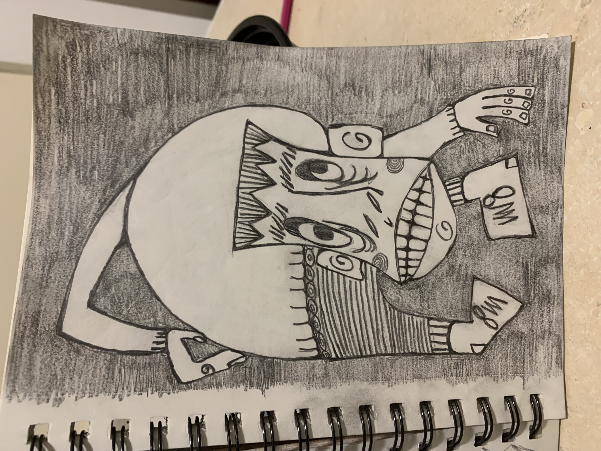

new drawing and some other stuff maybe
__________
tried out something a little different cause i felt inspired by a new friend's style. i did not execute it quite as incredibly as he does, but i really like the look of stippling, it gives an otherwise simple line drawing depth and life!
i spilled mac and cheese on it so it is kinda smudged ): but spent too much time on it to not complete it and i don't really care that much anyway lol


here's the first drawing i did that i kinda started this big drawing kick. gave him away to someone which i kinda regret but i might try to remake him cause it's one of my favorites
lol the guy i gave the drawing to had brown paper taped over his mirror and a tiny little square cut out so he could shave. very peculiar.
here's a little thing i sewed

went to the mall with my mom to pick up some shoes and got sucked into one of those dumb sample traps. the dude was pretty forward, was handing out some dumb thing that i took without really thinking and then he made some comment about how my mom and i looked like sisters(i hate when men do this oh my god that is not a compliment, imagine telling a man that he and his son look like brothers, how emasculating and weird would that be) he had a thick french accent and he was selling some stupid collagen prodcut that is supposed to tighten up your eye bags. dude moved to america just to work at a cart in a mall in tigard to prey on older women's insecurites and sell them a product they don't need and shame them for their age. what an asshole. there was another older woman being preyed on by his coworker. god i hate those guys. dude was all plastic in the face too. i hate that women are told they are only beautiful when they are young and that telling a woman she looks good for her age is a compliment. age is something to be proud of. women do not lose value when their hair greys or their skin sags or their face wrinkles. i wanted so badly to tell the dude what i really thought of his stupid product and i was seething with anger for some time but nothing would have changed.